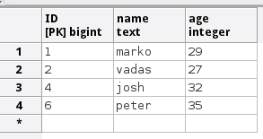
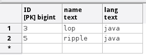
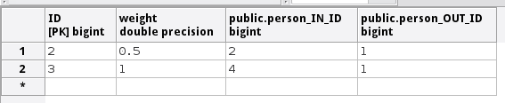
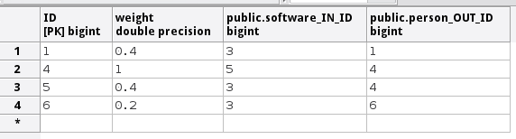
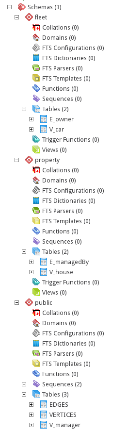

Introduction
Sqlg is a implementation of Tinkerpop3 on a RDBMS. Currently HSQLDB and Postgresql are supported.
Tinkerpop supported features
Sqlg passes Tinkerpop's StructureStandardSuite and ProcessStandardSuite test suites.
Graph Features not implemented.
- Computer
- ThreadedTransactions
- Variables
Vertex Features not implemented.
- MultiProperties
- MetaProperties
- UserSuppliedIds
Edge Features not implemented.
- UserSuppliedIds
Vertex property features not implemented.
- MapValues
- MixedListValues
- SerializableValues
- UniformListValues
Edge property feature not implemented.
- MapValues
- MixedListValues
- SerializableValues
- UniformListValues
Getting Started
Maven
Maven coordinates,
HSQLDB
<dependency>
<groupId>org.umlg</groupId>
<artifactId>sqlg-hsqldb</artifactId>
<version>1.0.0.M1</version>
</dependency>
Postgresql
<dependency>
<groupId>org.umlg</groupId>
<artifactId>sqlg-postgres</artifactId>
<version>1.0.0.M1</version>
</dependency>
Sqlg is designed to run as a singleton that can be shared among multiple threads. You can instantiate Sqlg using the standard tinkerpop3 static constructors.
SqlgGraph.open(final Configuration configuration)SqlgGraph.open(final String pathToSqlgProperties)
The configuration object requires the following properties.
HSQLDB
jdbc.url=jdbc:hsqldb:file:/tmp/sqlg
jdbc.username=SA
jdbc.password=
Postgresql
jdbc.url=jdbc:postgresql://localhost:5432/sqlgraphdb
jdbc.username=postgres
jdbc.password=******
In the case of Postgres the database must already exist.
If you want to run the Tinkerpop tests on Postgres you need to create upfront the various databases that are used. These are,
- g1
- g2
- readGraph
- standard
- subgraph
- temp
- temp1
- temp2
Gremlin Console
HSQLDB
[pieter@pieter-laptop bin]$ ./gremlin.sh
\,,,/
(o o)
-----oOOo-(3)-oOOo-----
gremlin> :install org.umlg sqlg-hsqldb 1.0.0.M1
==>A module with the name sqlg-hsqldb is already installed
gremlin> :plugin use tinkerpop.sqlg-hsqldb
==>tinkerpop.sqlg-hsqldb activated
gremlin> g = SqlgGraph.open('/home/pieter/Downloads/sqlg/sqlg-hsqldb/src/test/resources/sqlg.properties')
==>sqlggraph[SqlGraph]
gremlin> g.loadGraphML('../../data/grateful-dead.xml')
==>null
gremlin> g.V().count()
==>2424
gremlin>
Postgresql
[pieter@pieter-laptop bin]$ ./gremlin.sh
\,,,/
(o o)
-----oOOo-(3)-oOOo-----
gremlin> :install org.umlg sqlg-postgres 0.0.2-SNAPSHOT
==>A module with the name sqlg-postgres is already installed
gremlin> :plugin use tinkerpop.sqlg-postgres
==>tinkerpop.sqlg-postgres activated
gremlin> g = SqlgGraph.open('/home/pieter/Downloads/sqlg/sqlg-postgres/src/test/resources/sqlg.properties')
==>sqlggraph[SqlGraph]
gremlin> g.loadGraphML('../../data/grateful-dead.xml')
==>null
gremlin> g.V().count()
==>2424
gremlin>
Data types
| Java | HSQLDB | Postgres | Boolean | BOOLEAN | BOOLEAN |
|---|---|---|
| Byte | TINYINT | Not supported |
| Short | SMALLINT | SMALLINT |
| Integer | INTEGER | INTEGER |
| Long | BIGINT | BIGINTtd> |
| Float | Not supported | REAL |
| Double | DOUBLE | DOUBLE PRECISION |
| String | LONGVARCHAR | TEXT |
| Boolean[] | BOOLEAN ARRAY DEFAULT ARRAY[] | BOOLEAN[] |
| Byte[] | LONGVARBINARY | BYTEA |
| Short[] | SMALLINT ARRAY DEFAULT ARRAY[] | SMALLINT[] |
| Integer[] | INTEGER ARRAY DEFAULT ARRAY[] | INTEGER[] |
| Long[] | BIGINT ARRAY DEFAULT ARRAY[] | BIGINT[] |
| Float[] | Not supported | REAL[] |
| Double[] | DOUBLE ARRAY DEFAULT ARRAY[] | DOUBLE PRECISION[] |
| String[] | LONGVARCHAR ARRAY DEFAULT ARRAY[] | TEXT[] |
Architecture
With the coming of vertex labels to Tinkerpop3 the mapping of Tinkerpop's graph semantics to that of a RDBMS became natural and useful.
Vertex tables
Every unique vertex label maps to a table. Vertex tables are prefixed with a V_. i.e. V_Person. The vertex table
stores the vertex's properties.
Edge tables
Every unique edge label maps to a table. Edge tables are prefixed with a E_. i.e. E_friend. The edge table stores
each edge's adjacent vertex ids and the edge properties. The column corresponding to each adjacent vertex id (IN and OUT)
has a foreign key to the adjacent vertex's table.
VERTICES and EDGES
There are two special tables in Sqlg. One is for vertices (VERTICES) and the other is for edges (EDGES).
VERTICES
The VERTICES table has one record for every vertex in the graph. The VERTICES table's auto generated primary key
functions as the vertex id. Additionally the VERTICES table stores each vertex's label and the unique set of labels of
each vertex's incident edges.
Every vertex has a label and as such a vertex table. This table's ID column has a one to one mapping the ID column
of the VERTICES table.
This strategy allows gremlin queries of the form g.V(1L) to find a specific vertex in the VERTICES table and then know in which
table the vertex is stored.
For example, a query of the form g.V().has(T.label, 'Person') will go directly to the V_Person.
EDGES
The EDGES table has one record for every edge in the graph. The EDGES tables' auto generated primary key
functions as the edge id. Additionally the EDGES table stores each edge's label.
Similar to the vertex look-ups the EDGES table facilitates implementing queries of the form g.E(1L)
Tinkerpop-classic
Taken from Tinkerpop3

ER Diagram


All tables

V_person

V_software

E_knows

E_created

VERTICES

EDGES

Namespacing and Schemas
Many RDBMS databases have the notion of a schema as a namespace for tables. Sqlg supports schemas
for vertex labels. Distinct schemas for edge tables are unnecessary as edge tables are created in the schema of the adjacent out vertex.
By default schemas for vertex tables go into the underlying databases' default schema. For postgresql and hsqldb this
is the public schema.
To specify the schema for a label Sqlg uses the dot . notation.
Vertex john = this.sqlgGraph.addVertex(T.label, "manager", "name", "john");
Vertex palace1 = this.sqlgGraph.addVertex(T.label, "property.house", "name", "palace1");
Vertex corrola = this.sqlgGraph.addVertex(T.label, "fleet.car", "model", "corrola");
palace1.addEdge("managedBy", john);
corrola.addEdge("owner", john);
This will create a table V_manager in the public (default) schema. Table V_house is in a property schema and table V_car
is in a fleet schema. For the edges a E_managedBy table is created in the property schema and a E_owner table in the fleet schema.

Indexes
Sqlg supports basic indexing.
org.umlg.sqlg.structure.SqlgGraph has two methods on it to create indexes one for vertices and one for edges.
SqlgGraph.createVertexLabeledIndex(String label, Object... dummykeyValues)SqlgGraph.createEdgeLabeledIndex(String label, Object... dummykeyValues)
The dummykeyValues are required to indicate to Sqlg the name and type of the property. The type is needed when
the column does not yet exist and Sqlg needs to create it.
Outside of creating the index Sqlg has no further direct interaction with index logic. However gremlin queries with a
has step will translate to a sql where clause. If an index has been created on the property of the has step then
the underlying sql engine will utilize that index.
Example
@Test
public void testIndexOnVertex() throws SQLException {
this.sqlgGraph.createVertexLabeledIndex("Person", "name", "dummy");
this.sqlgGraph.tx().commit();
for (int i = 0; i < 5000; i++) {
this.sqlgGraph.addVertex(T.label, "Person", "name", "john" + i);
}
this.sqlgGraph.tx().commit();
assertEquals(1, this.sqlgGraph.V().has(T.label, "Person").has("name", "john50").count().next(), 0);
//Check if the index is being used
Connection conn = this.sqlgGraph.tx().getConnection();
Statement statement = conn.createStatement();
ResultSet rs = statement.executeQuery("explain analyze SELECT * FROM \"public\".\"V_Person\" a WHERE a.\"name\" = 'john50'");
assertTrue(rs.next());
String result = rs.getString(1);
System.out.println(result);
assertTrue(result.contains("Index Scan") || result.contains("Bitmap Heap Scan"));
statement.close();
this.sqlgGraph.tx().rollback();
}
Output: "Bitmap Heap Scan on "V_Person" a (cost=4.42..32.42 rows=18 width=40) (actual time=0.016..0.016 rows=1 loops=1)"
In the above example, Sqlg will create a table V_Person with column name together with an index on the name.
At present the default index is created. For postgresql this is a Btree index.
The output shows the result of a postgres query explain plan. The result shows that postgres does indeed utilize the index.
The gremlin query this.sqlgGraph.V().has(T.label, "Person").has("name1", "john50") will utilize the index on the name field.
Currently only Compare.eq is supported.
Schema creation
Sqlg creates the schema lazily. This is great, but comes with serious caveats.
HSQLDB does not support transactional schema creation. HSQLDB automatically commits any schema creation/alter command and immediately starts a new transaction. This can have some rather unfortunate consequences, as HSQLDB will silently commit a user transaction thus invalidating the user's transaction semantics.
Postgres supports transactional schema creation/alter commands. The user's transaction semantics remain intact. However schema creation commands creates table level locks which increases the risk of deadlocks in a multi-threaded environment.
Sql queries
Note Experimental Feature
List<Vertex> SqlgGraph.vertexQuery(String sql)
The requirement is that the given sql must return a ID column representing any vertex idx.
Sqlg will then be able to wrap the given sql to retrieve the necessary data to instantiate a SqlgVertex. This way only one
sql query is executed to retrieve vertices. The performance impact on the original query should be minimal.
Multiple Jvm
It is possible to run many Sqlg instances pointing to the same underlying database. These instances can be in the same jvm but is primarily intended for separate jvm(s) pointing to the same underlying database.
Sqlg caches database schema information. When multiple Sqlg instances point to the same database, Sqlg uses Hazelcast as a distributed cache of the schema information.
To indicate to Sqlg that a Hazelcast cluster is required you must specify hazelcast.members=ipaddres1,ipaddres2,ipaddres3
in the constructors configuration object. Hazelcast will then automatically set up the distributed cluster for the schema
information.
Batch mode
Postgres is significantly slower than HSQLDB. This is expected as Postgres runs as a server. HSQLDB shines when it runs in embedded mode. (HSQLDB has not been tested in server mode!)
Sqlg supports a batch mode. This is currently only implemented on Postgres.
Batch mode is activated on the transaction object itself. After every commit batchMode needs to be reactivated.
@Test
public void testBatchMode() {
this.sqlgGraph.tx().batchModeOn();
for (int i = 0; i < 1000000; i++) {
Vertex person1 = this.sqlgGraph.addVertex(T.label, "Person", "name", "a" + i);
Vertex person2 = this.sqlgGraph.addVertex(T.label, "Person", "name", "b" + i);
person1.addEdge("friend", person2, "context", 1);
if (i != 0 && i % 100000 == 0) {
this.sqlgGraph.tx().commit();
this.sqlgGraph.tx().batchModeOn();
}
}
this.sqlgGraph.tx().commit();
}
With batchMode on Sqlg will cache all modifications to the graph and on commit execute bulk sql statements.
This causes a very significant improvement of performance.
Performance Indicator
Below are some fairly trivial examples using Sqlg, the purpose of which is to give an indication of the performance that can be expected from Sqlg.
All tests were run on a standard laptop with the following specs.
- Intel(R) Core(TM) i7-4800MQ CPU @ 2.70GHz
- 500G Solid state drive
Running Tinkerpop's StructurePerformanceTest produces the following output
HSQLDB
WriteToIO.writeGraphSON: [measured 10 out of 10 rounds, threads: 1 (sequential)]
round: 1.42 [+- 1.82]...
WriteToIO.writeKryo: [measured 10 out of 10 rounds, threads: 1 (sequential)]
round: 0.70 [+- 0.11]...
WriteToIO.writeGraphML: [measured 10 out of 10 rounds, threads: 1 (sequential)]
round: 0.77 [+- 0.06]...
WriteToGraph.writeEmptyVertices: [measured 10 out of 10 rounds, threads: 1 (sequential)]
round: 3.31 [+- 0.43]...
WriteToGraph.writeEmptyVerticesAndEdges: [measured 10 out of 10 rounds, threads: 1 (sequential)]
round: 11.52 [+- 0.63]...
ReadFromGraph.readAllProperties: [measured 10 out of 10 rounds, threads: 1 (sequential)]
round: 4.26 [+- 0.97]...
Postgres
WriteToIO.writeGraphSON: [measured 10 out of 10 rounds, threads: 1 (sequential)]
round: 3.62 [+- 0.46]...
WriteToIO.writeKryo: [measured 10 out of 10 rounds, threads: 1 (sequential)]
round: 3.64 [+- 0.11]...
WriteToIO.writeGraphML: [measured 10 out of 10 rounds, threads: 1 (sequential)]
round: 4.24 [+- 0.10]...
WriteToGraph.writeEmptyVertices: [measured 10 out of 10 rounds, threads: 1 (sequential)]
round: 14.53 [+- 0.19]...
WriteToGraph.writeEmptyVerticesAndEdges: [measured 10 out of 10 rounds, threads: 1 (sequential)]
round: 48.64 [+- 0.41]...
ReadFromGraph.readAllProperties: [measured 10 out of 10 rounds, threads: 1 (sequential)]
round: 16.00 [+- 0.35]...
Some trivial examples.
Create 10000 objects, each with 2 properties
@Test
public void testAddPersons() {
StopWatch stopWatch = new StopWatch();
stopWatch.start();
for (int i = 0; i < 10000; i++) {
this.sqlgGraph.addVertex(T.label, "Person", "prop1", "property1", "prop2", "property2");
}
this.sqlgGraph.tx().commit();
stopWatch.stop();
System.out.println("Time to insert: " + stopWatch.toString());
stopWatch.reset();
stopWatch.start();
Assert.assertEquals(Long.valueOf(10000), this.sqlgGraph.V().has(T.label, "Person").count().next());
stopWatch.stop();
System.out.println("Time to read: " + stopWatch.toString());
}
HSQLDB
Time to insert: 0:00:00.672
Time to read: 0:00:00.124
Postgres
Time to insert: 0:00:01.955
Time to read: 0:00:00.117
Note that the Postgres read time is roughly equivalent to that of HSQLDB. This is because in the above test there is only one call to the database. Postgres itself is fast, however round trips between client and server are expensive.
Create 10001 Persons, each with 2 properties and one friend
@Test
public void testAddPersonAndFriends() {
StopWatch stopWatch = new StopWatch();
stopWatch.start();
Vertex previous = this.sqlgGraph.addVertex(T.label, "Person", "name", "first");
for (int i = 0; i < 10000; i++) {
Vertex current = this.sqlgGraph.addVertex(T.label, "Person", "name", "current" + i);
previous.addEdge("friend", current);
}
this.sqlgGraph.tx().commit();
stopWatch.stop();
System.out.println("Time to insert: " + stopWatch.toString());
stopWatch.reset();
stopWatch.start();
List<Vertex> persons = this.sqlgGraph.V().<Vertex>has(T.label, "Person").toList();
Map<Vertex, List<Vertex>> friendMap = new HashMap<>();
persons.forEach(
p -> friendMap.put(p, p.in("friend").toList())
);
Assert.assertEquals(10001, friendMap.size());
stopWatch.stop();
System.out.println("Time to read all vertices: " + stopWatch.toString());
}
HSQLDB
Time to insert: 0:00:02.095
Time to read all vertices: 0:00:01.138
Postgres
Time to insert: 0:00:04.810
Time to read all vertices: 0:00:09.177
To retrieve the friends 1001 calls are made made. Postgres is significantly slower in this case.
Postgres, Create 1 000 000 Persons and Dogs with a pet edge. BatchMode on.
@Test
public void testPostgresBatchMode() {
this.sqlgGraph.tx().batchModeOn();
StopWatch stopWatch = new StopWatch();
stopWatch.start();
for (int i = 1; i < 1000001; i++) {
Vertex person = this.sqlgGraph.addVertex(T.label, "Person", "name", "John" + i);
Vertex dog = this.sqlgGraph.addVertex(T.label, "Dog", "name", "snowy" + i);
person.addEdge("pet", dog);
if (1 % 100000 == 0) {
this.sqlgGraph.tx().commit();
this.sqlgGraph.tx().batchModeOn();
}
}
this.sqlgGraph.tx().commit();
stopWatch.stop();
System.out.println("Time to insert: " + stopWatch.toString());
stopWatch.reset();
stopWatch.start();
Assert.assertEquals(1000000, this.sqlgGraph.V().<Vertex>has(T.label, "Person").count().next().intValue());
Assert.assertEquals(1000000, this.sqlgGraph.V().<Vertex>has(T.label, "Dog").count().next().intValue());
stopWatch.stop();
System.out.println("Time to read all vertices: " + stopWatch.toString());
}
Postgres
Time to insert: 0:00:51.681
Time to read all vertices: 0:00:16.130
HSQLDB, Create 1 000 000 Persons and Dogs with a pet edge.
@Test
public void testHsqldbLargeLoad() {
StopWatch stopWatch = new StopWatch();
stopWatch.start();
for (int i = 1; i < 1000001; i++) {
Vertex person = this.sqlgGraph.addVertex(T.label, "Person", "name", "John" + i);
Vertex dog = this.sqlgGraph.addVertex(T.label, "Dog", "name", "snowy" + i);
person.addEdge("pet", dog);
if (i % 100000 == 0) {
this.sqlgGraph.tx().commit();
}
}
this.sqlgGraph.tx().commit();
stopWatch.stop();
System.out.println("Time to insert: " + stopWatch.toString());
stopWatch.reset();
stopWatch.start();
Assert.assertEquals(1000000, this.sqlgGraph.V().<Vertex>has(T.label, "Person").count().next().intValue());
Assert.assertEquals(1000000, this.sqlgGraph.V().<Vertex>has(T.label, "Dog").count().next().intValue());
stopWatch.stop();
System.out.println("Time to read all vertices: " + stopWatch.toString());
}
HSQLDB
Time to insert: 0:02:32.435
Time to read all vertices: 0:00:19.026